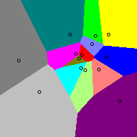
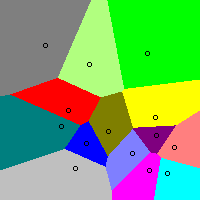
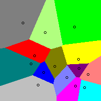
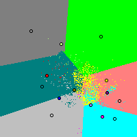
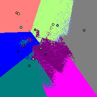
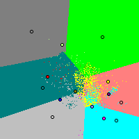
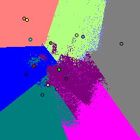

These are the slides for WDS presentation to Colorado State legislature, 19 Sept. 2007.
| Candidates (5 in all) | Your Vote |
|---|---|
|
1: Honest ABE |
9 |
|
2: Bogus BOB |
1 |
|
3: Charisma CATE |
7 |
|
4: Dubious DIANE |
X |
|
5: Evil EVE |
0 |
Award each candidate a numerical score from 0 to 9. Advise giving your favorite candidate 9 and the worst one 0. If you intentionally wish to express no opinion about that candidate, then leave the default "X" choice selected; only numerical scores will be incorporated into the averaging.
Also try zohopolls, or this instant runoff demo (IRV will not run on many of today's voting machines).
| Candidates➧ | Amy | Bob | Cal |
|---|---|---|---|
| 1st voter: | 9 | 6 | 0 |
| 2nd voter: | 9 | 9 | X |
| 3rd voter: | 8 | 0 | 7 |
| 4th voter: | 6 | 1 | 8 |
| sum: | 32 | 16 | 15 |
| average: | 8 | 4 | 5 |
| which is: | 8=32/4 | 4=16/4 | 5=15/3 |
(The X's denote "intentionally left blank" by that voter to denote the fact he wishes to express ignorance/no opinion about Cal and wants to leave the decision about his score to other, more knowledgeable voters.)
Procedure: compute Amy's, Bob's, and Cal's sums, then compute their averages 32/4=8, 16/4=4, 15/3=5, Because Amy has highest average, she wins.
|
Australia forces IRV voters to rank-order every candidate. Other places allow voters only to order some & omit others (automatically last-ranked). Some places force voters to rank their top K choices (for some fixed value K, such as 2 or 3) but no more. In range-voting, "no opinion" ("X") scores can also be permitted; these do not affect a candidate's average (then is common to refuse to permit somebody to win if he has too-few genuine, i.e. numerical, scores).
|
Plurality: A wins (most top-rank votes with 4).
Plurality+Runoff among top two: B wins over A in the runoff, 6-to-5.
Instant Runoff (IRV): C wins (eliminate E, D, F, and B in that order
– doesn't matter which way you break DF tie – then C beats A in final round 7 to
4). IRV repeatedly deletes the candidate with fewest top-rank votes, then the
remaining one wins.
Borda:
D wins. (D's Borda score is 16+9+4+5+2=36 versus E with 12+12+6+1+3=34 and with
lower scores for A, B, C, and F.) In the Borda system a candidate gets awarded 0
points if ranked last, 1 if ranked second-last, 2 if... and the candidate with
the greatest score-sum ("Borda count") wins.
Condorcet: E wins.
(Since E pairwise-beats each other candidate, e.g. beating A 6:5, B 6:5, C 7:4,
D 6:5, and F 9:2.)
Approval Voting: If all the
red candidates are "approved," then F wins with 7
approvals (versus A=4, B=5, C=3, D=6, E=5).
And with 0-99 Range Voting, it would in fact be possible to make any of the 6 candidates win, depending on how the voters chose the scores compatibly with the orderings above. In Range Voting each voter awards a score from 0 to 99 to each candidate; greatest average score wins. (Fancier rules allow also scoring a candidate with X = intentional blank = "no opinion" – only numerical scores incorporated into averages.)
| Voting system | Expressiveness |
|---|---|
| Plurality | Least (your vote says the least you could possibly say!) |
| Approval | More (yes or no for every candidate) |
| Rank-order systems | Still More (order the candidates) – but worse than approval in sense rank-order says nothing about strength of preference |
| Range | Most (opinion with strength on every canddt, and can express ignorance/apathy) |
Desirable property: A voter, by "participating" (i.e. casting an honest vote) should not worsen the election result from her point of view (versus if she had not voted).
| Voting system | Participation? |
|---|---|
| Plurality | Yes |
| Approval | Yes |
| Condorcet Rank-order systems | FAILS! |
| Borda Rank-order system | Yes |
| Instant Runoff (IRV) | FAILS! |
| Range (assuming no "blanks") | Yes |
| #voters | their vote |
|---|---|
| 8 | C>A>B |
| 4 → 7 | A>B>C |
| 3 | B>C>A |
| 3 | B>A>C |
Here A is eliminated in first IRV round, then B wins 10:8 over C. But if we add 3 more A>B>C voters, then B is eliminated in the first round, whereupon C wins 11:10 over A. By voting "C=worst," they made C win! These 3 voters would have been "better off staying home" and not voting.
How common is this problem? 16.2% in large 3-canddt IRV "random elections" (50% in those in which the IRV & plurality winners differ); if large number of candidates, conjecturally→100%.
Desirable property: A voter should be able to vote her favorite top, without fear that she will worsen the election result from her point of view (versus if she had dishonestly voted to pretend her favorite was below top).
This seems very important to make democracy work. If voting for your favorite is stupid, what kind of democracy is that?
| Voting system | Safe to vote favorite top? |
|---|---|
| Plurality | FAILS! |
| Approval | Yes |
| Condorcet Rank-order systems | FAILS! |
| Borda Rank-order system | FAILS! |
| Instant Runoff (IRV) | FAILS! |
| Range | Yes |
This problem is common and called "spoiler." A Nader-top, Gore-second voter in Florida 2000, who voted honestly Nader-top, was being strategically unwise because her vote made her top & 2nd-choice candidates both lose. (Nader here was the "spoiler.") Lying in her vote (by voting Gore "top") would have been smarter; that way her 2nd favorite would win. Plurality voting system can reward voters who lie about their favorite. Side effect ("Duverger's law"): over time, kills off all "third parties."
Myth: IRV cures this problem. Reality: IRV still exhibits "spoilers," still encourages voters to lie about their favorite, and still kills off third-parties over time (Fiji; Australia where in all the state & federal IRV seats combined there is one third-party member).
| #voters | their vote |
|---|---|
| 20 | Bush > Gore > Nader |
| 10 | Gore > Bush > Nader |
| 29 | Nader > Gore > Bush |
In this 59-voter IRV election we've artificially named the candidates "Bush," "Gore" and "Nader" to remind you of FL 2000... (but are not claiming this resembles FL 2000 to more than a slight degree)
Under the rules of IRV, Gore is eliminated and the Gore second-votes go to Bush, who wins over Nader 30-29.
But what if 10 (or more) people in the third group, realizing Nader has no chance, strategically decide insincerely to lower Nader to 2nd or last place on their ballots? Then:
| #voters | their vote |
|---|---|
| 20 | Bush > Gore > Nader |
| 20 | Gore > Bush > Nader |
| 19 | Nader > Gore > Bush |
Now Bush and Gore get 20 first place votes apiece, and Bush only 19. Nader is eliminated first, giving 19 votes to Gore, and Gore crushingly beats Bush, 39-20. Those ten who switched their votes, got Gore (their second choice) instead of Bush (their third choice).
Betraying Nader paid off. IRV means betraying your true favorite third party candidate pays off. Voting third party can mean wasting your vote under IRV, just like under plurality.
How common is this problem? 19.6% in large 3-canddt IRV "random elections" but arguably 100% of the time if voters have "incomplete information" – i.e. very common.
Desirable property: A voter, by increasing her vote for somebody, should not cause them to lose. (And decreasing your vote for somebody, should not cause them to win!)
| Voting system | Monotonic? |
|---|---|
| Plurality | Yes |
| Approval | Yes |
| Condorcet Rank-order systems | Some yes, some no. |
| Borda Rank-order system | Yes |
| Instant Runoff (IRV) | FAILS! |
| Range | Yes |
|
|
Here IRV voting maximally against your favorite candidate – lying about everything & apparently the stupidest most-suicidal possible vote – makes your favorite win!!
How common is this problem? ≥4.9+12.2=17.7% in large 3-canddt IRV "random elections" (two kinds). (Can you say "lawsuit"?)
Desirable property: If new candidates that are almost exactly the same (in the view of every voter) as an old candidate X enter (or withdraw from) the race, that should not affect the winner (except for possible replacement by a clone).
| Voting system | Safe from clones? |
|---|---|
| Plurality | FAILS! |
| Approval | Yes if all clones always share same approval-level, else no |
| Condorcet Rank-order systems | Some yes, some no. |
| Borda Rank-order system | FAILS! |
| Instant Runoff (IRV) | Yes |
| Range | Yes |
Very serious problem because elections can easily be totally manipulated by, e.g. supporting candidates similar to your opponent to make both lose! Borda has opposite cloning problem ("teaming") – by running lots of clones of yourself, you (or a clone) win! (Battle of the clone armies!) Without clone-immunity, it is not about who is the best. It is about which party can summon up the most gall to try this nonsense.
4 candidates and 7 voters. Start looking at situation on left.
|
|
Finish order reverses with Borda!
Range, Approval, Plurality: Removing a loser (from all ballots & the election) never changes finish order for others. But with IRV a huge-loser can enormously change things even if only 2 voters (e.g. the candidate & spouse only) rank him top. "IRV chaos" example with 2025 voters and 12 candidates:
| #voters | their IRV vote |
|---|---|
| 1000 | Z>P>Q>R>S>T>U>V>W>X>Y>A |
| 512 | P>Q>R>S>T>U>V>W>X>Y>A>Z |
| 256 | Q>R>S>T>U>V>W>X>Y>A>P>Z |
| 128 | R>S>T>U>V>W>X>Y>A>P>Z>Q |
| 64 | S>T>U>V>W>X>Y>A>P>Z>Q>R |
| 32 | T>U>V>W>X>Y>A>P>Z>Q>R>S |
| 16 | U>V>W>X>Y>A>P>Z>Q>R>S>T |
| 8 | V>W>X>Y>A>P>Z>Q>R>S>T>U |
| 4 | W>X>Y>A>P>Z>Q>R>S>T>U>V |
| 2 | X>Y>A>P>Z>Q>R>S>T>U>V>W |
| 1 | Y>A>P>Z>Q>R>S>T>U>V>W>X |
| 2 | A>P>Z>Q>R>S>T>U>V>W>X>Y |
With IRV, who wins? And who is a "huge loser"? And how is this election going to be a huge chad-counting, lawsuit-flinging election-administration nightmare?
What is a 2D "issue space"? Just a 2-dimensional notion of how people view two political issues. For example, the "Nolan chart" (invented by the Libertarian Party) – although you could instead employ any other two issues to make your own kind of chart.
In below computer-generated pictures, voters prefer candidates closer to them. Each pixel is an ≈5000-voter election for a society that is a "bell curve" (in both directions) centered at that pixel. So each 200�200 picture exhibits 40,000 elections!
All voters vote honestly. Candidates are the little circles; pixel colors say which candidate won. The pictures in the top row are the hypothetical "optimum voting system," which always elects the best possible candidate for society (maximizing summed utility, utility being a decreasing function of voter-candidate distance). The corresponding pictures in the bottom row are IRV (Instant Runoff Voting).
 
 
 



Observations:
| Voting system | Favors Centrists or Extremists? | |
|---|---|---|
| Plurality | Extremists | |
| Approval | Centrists or no bias (depends on assumed voter "thresholding" behavior); also if they vote "plurality style" will duplicate plur's extremist-favortism | |
| Condorcet Rank-order systems | no bias | |
| Borda Rank-order; Range | little or no bias (pictures = slightly distorted version of above) | |
| Instant Runoff (IRV) | Extremists | |
Counting votes in precincts (or counties), then sending the precinct totals to the statewide election office – it has been a way of life in almost all US states for as long as any of us have lived.
But if we were to switch to IRV (instant runoff) voting, that would no longer be possible. All the votes, en masse, would have to be given to statewide central tabulating for them to count; there simply could no longer be such a thing as a "county subtotal."
This is not an insuperable obstacle to adopting IRV voting, but is a huge change in US election procedures, financing, and organization, and might make everything vulnerable to huge centrally-organized election frauds (can't observe your and your neighbors' own votes being counted anymore).
To make it clearer why there is no such thing as a district "subtotal" anymore if we use IRV voting, consider this 13+13-voter example:
|
|
|
So merging two districts both won by Bush under IRV, can produce an IRV victory for Gore.
| Voting system | Countable in Precincts? |
|---|---|
| Plurality | Yes |
| Approval | Yes |
| Condorcet Rank-order systems | Some yes, some no |
| Borda Rank-order system | Yes |
| Instant Runoff (IRV) | FAILS! |
| Range | Yes |
"Dumb totalizing" machines have their advantages. Cheap, simple, not computerized. But they were designed for Plurality voting. What if switch to some other voting system? Need to throw them in garbage? Do we need computerized machines (or a full-manual count)?
| Voting system | OK for "dumb totalizing" machine designed for plurality voting? |
|---|---|
| Plurality | Yes |
| Approval | Yes |
| Condorcet Rank-order systems | FAILS! |
| Borda Rank-order system | FAILS! |
| Instant Runoff (IRV) | FAILS! |
| Single-digit Range | Yes! (Surprise!) |
How can you "audit" an IRV election? If no such thing as a "precinct subtotal," then idea of selecting random precincts for recounts as a sanity-check & "estimator of systematic bias & fraud," (e.g. required in upcoming federal HR811 bill) has less meaning...
If forced to use computerized machines and central counting, then how do you know election wasn't HACKED?? Princeton investigation of Diebold AccuVote-TS Voting Machine ("2nd-most commonly used machine in USA, used by 10% of all voters") revealed:
With IRV, computerized machines are not avoidable (unless go for full-manual count – not so easy for complicated system like IRV). Current computerized machines are hackable and fraudable and unbelievably poorly protected. These machines may well be declared illegal (California decertified all or most of them this year; San Francisco now apparently has to go to full-manual count). Then: big scandal and heavy expenses.
Range & Approval: don't need computer in your machine; don't need new machines or new software; easy to count. Easier transition.
Approval is the simplest system. Even simpler than plurality (no "overvoting=illegal" rule)! Note: the need to find and discard "overvotes," in plurality voting, causes many difficulties including machine- and fraud-related problems.
How can we measure "simplicity"?
| Voting system | How simple / spoilage rate data |
|---|---|
| Approval | Simplest. And sure enough – Lowest "spoiled ballot" rates (fraction of 1%). |
| Range | Second-lowest "spoiled ballot" rates! Surprise – lower than for plurality voting in all of several studies so far. |
| Plurality | Spoilage rates ≈ 2% in USA |
| IRV | Highest "spoiled ballot" rates in the world (Fiji≈10% spoiled; Australia≈5%) When San Francisco switched to IRV, spoilage rates went up by factor of 7 for IRV vs Plurality races. |
IRV and Condorcet are the most complicated commonly-proposed voting systems. But IRV doesn't seem that hard. (Pro-IRV propaganda calls it "Simple as 1-2-3.") Or is it? North Carolina adopted Instant Runoff Voting in a "pilot program" for use in 2007 and 2008 elections for local offices in volunteering jurisdictions.
VERBATIM rules description for IRV: as distributed to NC election officials. Note: hidden in there, these NC rules make several crucial changes to standard transferable-vote procedures (all for the worse in our view):
INSTANT RUNOFF VOTING in NORTH CAROLINA 2007 PILOT PROGRAM - M100 METHODOLOGY - VOTING When the Instant Runoff Voting (IRV) method is used for a particular contest, voting for one's top choice or choices is the same as if IRV were not used. Each voter is allowed to vote for as many candidates as there are seats to be filled in column A (see Exhibit I â Example IRV Ballot). Each voter is then allowed the opportunity to indicate two alternate candidate choices, one per column in each of columns B and C, ranked in order of preference. The voter has the option to choose alternate candidates. For example, in the Office of Mayor contest there is one seat to be filled. Each voter may vote for one candidate in column A, and then may indicate a first alternate candidate choice in column B, and a second alternate candidate choice in column C. In the City Council contest there are four seats to be filled. Each voter may vote for as many as four candidates in column A, and then may indicate a first alternate candidate choice in column B, and a second alternate candidate choice in column C. COUNTING - FIRST ROUND Only column A will be considered in the first round of counting. If a voter overvotes in column A, no votes in that contest on that ballot will be considered. A voter may undervote in column A. In the first round of counting, all ballots will be counted exactly as if IRV were not used, with the exception that any results from columns B and C will be ignored. If a sufficient number of candidates receive total votes exceeding the threshold of victory for all seats in that contest to be filled, normal procedures apply and there will be no need for a second round of counting. If all the seats are not filled, those candidates which have won seats will be removed from further consideration, and a number of candidates not exceeding twice the number of remaining seats to be filled will advance to the second round of counting, those candidates being the ones with the greatest numbers of first round votes. COUNTING - SECOND ROUND If a second round of counting is required, the counting shall be performed according to the following procedures: A) Counting a single-seat contest: 1) Ballots shall be maintained in separate groups according to where or how they were cast, by precinct or one-stop polling locations, or by mail. 2) For each such group, ballots shall be separated into four stacks, designated Stack A, Stack B, Stack C, and Stack O. 3) If a ballot was overvoted in column A, it shall be placed into Stack O. 4) If a ballot contains a vote in column A for either runoff candidate, it shall be placed into Stack A. Because these votes have already been counted in the first round, there is no need to count them again. 5) If a ballot does not contain a vote in column A for either runoff candidate, but does contain a vote in column B for either runoff candidate, it shall be placed into Stack B. 6) If a ballot does not contain a vote in either column A or B for either runoff candidate, it shall be placed into Stack C. 7) Stack B ballots shall be counted by machine or by hand. Only those votes cast for either runoff candidate in column B shall be considered. These totals shall be added to the totals for those candidates from the first round of counting. 8) Stack C ballots shall be counted by machine or by hand. Only those votes cast for either runoff candidate in column C shall be considered. These totals shall also be added to the totals for those candidates from the first round of counting. 9) Repeat steps 1-8 as necessary until all ballots for the entire jurisdiction have been counted. 10) The runoff candidate with the greatest total votes shall be declared the winner. B) Counting a multi-seat contest: 1) Ballots shall be maintained in separate groups according to where or how they were cast, by precinct or one-stop polling locations, or by mail. 2) For each such group, ballots shall be separated into five stacks, designated Stack A, Stack B, Stack B2, Stack C, and Stack O. 3) If a ballot was overvoted in column A, it shall be placed into Stack O. 4) If a ballot contains as many votes in column A as there are total seats to be filled, and all such votes are for candidates who either won seats in the first round or advanced to the second round, it shall be placed into Stack A. Because these votes have already been counted in the first round, there is no need to count them again. 5) If a ballot contains in column A exactly one undervote or exactly one vote for a candidate who did not win a seat in the first round and did not advance to the second round, and does contain a vote in column B for any runoff candidate not already voted for in column A, it shall be placed into Stack B. 6) If a ballot contains in column A more than one undervote or more than one vote for candidates who did not win seats in the first round and did not advance to the second round or at least one of each of these, and does contain a vote in column B for any runoff candidate not already voted for in column A, it shall be placed into Stack B2. 7) Of all remaining ballots, any which contains in column C a vote for a runoff candidate already voted for in column A or B shall be placed into Stack O, and the rest shall be placed into Stack C. 8) Stack B2 ballots shall be counted by machine or by hand. Only those votes cast for a runoff candidate in column B shall be considered. These totals shall be added to the totals for those candidates from the first round of counting. 9) All Stack B2 ballots which contain in column C a vote for a runoff candidate already voted for in column A or B shall be placed into Stack O, and the rest shall be placed into Stack C. 10) Stack B ballots shall be counted by machine or by hand. Only those votes cast for a runoff candidate in column B shall be considered. These totals shall be added to the totals for those candidates from the first round of counting. 11) Stack C ballots shall be counted by machine or by hand. Only those votes cast for a runoff candidate in column C shall be considered. These totals shall also be added to the totals for those candidates from the first round of counting. 12) Repeat steps 1-11 as necessary until all ballots for the entire jurisdiction have been counted. 13) The runoff candidate with the greatest total votes shall be declared the winner of a seat in this contest. 14) If not all seats have been filled, for each precinct or other ballot group recombine all ballots, then repeat steps 1-13 to determine the next winner.
| Voting system | Expressive | Participation | Favorite- Safe |
Clone- Safe |
Monotonic | Remove- Loser- Safe |
Precinct- Countable |
Dumb- Machines |
Extremist/ Centrist Bias |
Simplicity |
|---|---|---|---|---|---|---|---|---|---|---|
| Plurality | The Worst | yes | FAILS! | FAILS! | yes | FAILS! | yes | yes | Extremist | good |
| Approval |  or or  on each canddt |
yes | yes | partial | yes | yes | yes | yes | voter- behavior- dependent |
best (excellent for meetings) |
| Condorcet systems | rank order | FAILS! (2.5%?) | FAILS! | yes & no | yes & no | FAILS! 9% | yes & no | FAILS! | unbiased | complex |
| Borda | rank order | yes | FAILS! | FAILS! | yes | FAILS! | yes | FAILS! | ok | medium |
| Instant Runoff (IRV) | rank order | FAILS! 16.2% | FAILS! 19.6-100% |
yes | FAILS! 14.7% |
FAILS! | FAILS! | FAILS! | Extremist | complex |
| Range | The Best | yes (if no "blanks") | yes | yes | yes | yes | yes | surprisingly yes | ok (bias, if any, small) | surprisingly good |
Good. More voter honesty ⇒ better, less-strategically-distorted election results for all. But why happens?
|
Pseudo-election with real US voters (122 range & 656 approval) simultaneously with the 2004 presidential election (as exit poll). Note RV psychological drive for human honesty ⇒ hugely different election results – check out how hugely distorted our "democracy" is...
French 2007 study found different winner (the "centrist" Bayrou) from Range (also B. was a "beats-all" winner according to polls) than with their plurality+runoff 2nd round system (the "rightist" Sarkozy)
And in the 1980 US Presidential Election, according to analysis based on many polls in ch. 9 of Brams & Fishburn's book,
| Candidate | Plur | AV |
|---|---|---|
| Clinton(Dem) | 43.0 | 55 |
| Bush(Rep) | 37.4 | 49 |
| Perot | 18.9 | 42 |
August 2007. Ames, Iowa. Romney overwhelmingly wins GOP straw poll. (Results delayed due to malfunctioning Diebold voting machines.) Romney spent $1 million on TV ads and to bus thousands of his supporters to Ames (many-hour bus rides, free wining & dining) and pay "poll tax" fees so they could vote for him in this poll! Far-outspent all rivals.
Why pay $1 million to fakely-win a straw poll??? Senseless? Unfortunately, is method to this madness.
BUT politics would be HEALTHIER if it were not about cash, not about constructing PR-illusions, not about "momentum" and trying to force voters to vote for you even though they dislike you – and more about actual candidate-quality. (You can be good quality choice without $millions.)
With favorite-safe systems like Range Voting, voter not "strategically forced" to vote against her true favorite when others lead in polls. Cash and faking leads are less important and quality is more important.
Republican Party would also be healthier. Suppose Romney is poor-quality but manages to win the GOP nomination via such manipulations (made possible by plurality voting system in primaries and in straw polls). Then the entire GOP has been hurt and likely to lose presidency to a Democrat. Suppose GOP instead were to use range voting in primary and straw polls. Then would tend to nominate higher-quality candidates. That helps entire GOP and gives them better chances against the Democrat nominee (especially if the Dems foolishly do not use range voting in their primaries, hence they nominate low-quality choice).
(And could make the same argument about Hillary Clinton from the Dems' perspective...)
Iowa 2008. 10 Rs, 10 Ds competing. Plurality system: voters "strategically forced" to vote for one of the "leading 2" even if not their favorite; we get the best-of-two. (E.g. Hillary Clinton probably one of the two. Even if 65% of Dem voters want non-Hillary, HC could still easily win Dem nomination due to anti-HC vote-split, etc.) Range voting: more like we get best of all 10. Which yields better result for the USA (and for your party's chances in the later general election)?
Because expect 10 Dem & 10 Repub candidates in primaries, range voting will have maximized quality advantage versus plurality & approval. Computer sims:
| #candidates: | C=2 | 3 | 4 | 5 | 8 | 10 | 15 | 20 | 50 | 100 | 200 |
|---|---|---|---|---|---|---|---|---|---|---|---|
| 5123 voters | 100% | 73% | 61% | 52% | 38% | 32% | 24% | 19% | 8% | 4% | 2% |
| Approval | Range? |
|---|---|
| simpler | more complex (but voters better with it than plurality, say spoilage rate data) |
| (Almost) same thing if all voters strategic – but range better quality if many honest voters. Real-world: 75% of range voters do not range-vote approval style, so RV better. | |
| Suffers "Burr dilemma": if two good candidates, voters tempted to approve only one, can start "retaliatory spiral"; if so then both lose many votes and some worse rival wins. (Real-world example: Portugal 1986.) | More resistant to that because can vote 9 & 8 for the two, still indicating preference but not maximally hurting one. |
Best to regard Range & Approval not as rivals but rather as related / same thing (Approval=Range1).
Natural progression: Plurality → "Count All the Votes" = Approval → Range (What happens with Range? *Fractional votes are allowed.)
Legislation could adopt Approval in situations where speed and simplicity paramount (votes in meetings, or on stone-age voting machines) but with an upgrade to range9 or range99 mandated for future. As a stopgap, both could simultaneously be used (make Approval & Range9 & Range99 compatible by multiplying by 99 & 11 & 1).
Historically, many places & organizations that have adopted IRV have often decided to return to plain plurality voting. (Approximately same number of switches Plur→IRV as IRV→Plur.) Famous IRV→Plur Examples: New York City, Cincinnati.
Disquietingly, the IEEE abandoned Approval voting to backslide to plurality, and Dartmouth College may be about to do same, although there still are many more historical instances of Plur→Approval switch, than other direction.
But we are unaware of any organization that, once it had range voting, switched away from it.
Oversimplified into nutshell: "Bayesian regret" of election method E is "expected avoidable human unhappiness" caused by using E. Can be measured with computer simulations.
More precise answer: Bayesian regret is gotten via this procedure:
Redo steps 1-6 zillion times (i.e. do zillion simulated elections) to find average Bayesian regret of election system E.
Comments: The Bayesian regret of an election system E may differ if we
∃ at least 5 different "knobs" to "turn" on our machine for measuring Bayesian Regret of elctn method E.
Measured Bayesian regrets for about 30 different election methods. 720 different "knob setting" combinations tried. Amazing result: in all 720 scenarios, range voting was best (had lowest Bayesian regret, up to statistically insignificant noise). We repeat: RV best in every single one of those 720 with either honest or strategic voters, regardless of ignorance-level, #candidates (3-5), #voters (5-200), #issues (0-∞) etc. [But no system, including range is "perfect"; all on average fall short of optimum utility.]
| Voting system | Regret A | Regret B |
|---|---|---|
| Magically elect optimum winner | 0 | 0 |
| Range (honest voters) | 0.04941 | 0.05368 |
| Borda (honest voters) | 0.13055 | 0.10079 |
| Approval (honest voters) | 0.20575 | 0.16549 |
| Condorcet-LR (honest voters) | 0.22247 | 0.14640 |
| IRV (honest voters) | 0.32314 | 0.23786 |
| Plurality (honest voters) | 0.48628 | 0.37884 |
| Range & Approval (strategic exaggerating voters) | 0.31554 | 0.23101 |
| Borda (strategic exaggerating voters) | 0.70219 | 0.48438 |
| Condorcet-LR (strategic exaggerating voters) | 0.86287 | 0.58958 |
| IRV (strategic exaggerating voters) | 0.91522 | 0.61072 |
| Plurality (strategic voters) | 0.91522 | 0.61072 |
| Elect random winner | 1.50218 | 1.00462 |
Warning: Table makes it appear Borda is second-best after range. But in fact the full study considers hundreds of tables like this, & in many of them, Borda is not second best, in fact in many it's way down in the rankings. The question of which system is second best has no clear answer – some better in some kinds of election situations, others in others.
If 51% Democrat voters, you could easily get 100% Democrat winners. (Massachusetts.) 51% Women voters, but way less than 51% women in the Senate. 12% Black voters, but way fewer in Senate. Only one atheist ever served in congress (or so they claim). Etc.
This is disproportionality. Many people feel it would be better if representatives were more... representative. For a voting system to offer any guarantee of that, it needs to be for multiwinner elections, e.g. 17-candidate, 5-winner elections.
Many naive ways to turn single-winner methods into multiwinner ones (e.g. "multiwinner plurality" where the top-W finishers win the W seats and you are granted W plurality votes) can totally fail to deliver proportional results. North Carolina's IRV-variant for multiwinner elections should tend to deliver 100% Democrat (or 100% Republican) winners, contrary to the professed aims of those behind that legislation.
"Hare/Droop reweighted STV" system (used in Ireland) is complicated. Involves rank-ordering votes, "reweighting" of votes so when X wins, then those who voted X now have their votes "deweighted" according to a magic formula, and then continue on to select next winner (then new reweighting) etc. Formula must be just right to get "proportionality theorem." Bizarre voter strategies (e.g. intentionally vote for no-hoper so your vote will retain high weight on an iffy seat; intentional vote-splitting in exactly the right proportions choreographed by parties distributing randomized "how to vote" cards) have been observed.
In "party list" systems (used in many countries, Germany, Israel, Netherlands) you do not vote for candidates, you vote for parties. A party with 27% of the votes gets 27% of the seats. But... that totally removes individual accountability and can have heavy biases based on party-size. (E.g. what if you aren't in a party?)
Harder to compare multiwinner systems ("Bayesian Regret" methodology only works for single-winner systems) and "properties" more complicated & less understood.
There is a provably-proportional multiwinner version of range voting called reweighted range voting
By act of Congress, multiwinner elections are currently illegal in the USA for Federal seats.
There is one remarkably simple but unconventional kind of provably-proportional voting: Asset Voting. "Unconventional" because both the voters and the candidates participate. (Warning: this bothers a lot of people, and also prevents asset voting from being used at all in abstract scenarios with candidates that are not people, such as choosing pizza flavors.) Asset proven (in terms of certain criteria) superior to any "conventional" system.
Forest Simmons' simplified version of Asset voting to elect W winners from C candidates, 0 < W < C:
In variants, only certain kinds of redistributions are permitted, for example the candidates in increasing order of "wealth" drop out, redistributing their assets among the remaining ones as they do so. This "poorest first" variant has the advantage that it forces the procedure to end quickly and everybody knows when it has ended.
You can also compromise and, e.g, provide the voter with three plurality-style ballots, enabling her to split up her vote three ways – or fewer by using more than one ballot to vote for the same candidate.
| #Voters | their vote |
|---|---|
| 38 | Bush |
| 37 | Gore |
| 20 | Nader |
| 5 | Buchanan |
This is a make-believe analogue of the 2000 US presidential election. It's unrealistic in several ways, the most obvious being that it was a one-winner election, not a multiwinner election (asset voting can be used for single-winner elections but is intended for more-than-one-winner elections). Ignore the unreality. We are just trying to illustrate how it might work in a simple and familiar way.
In this election, Nader could decide to drop out of the picture and award his 20 asset points to Gore. (Both Bush and Gore would, no doubt, try to make deals with Nader to try to get his assets. But, let us suppose that Nader, after considering his options, the offered deals, and the fact he considered his views closer to Gore's than to Bush's, preferred Gore.) In that case, Gore would win with 37+20=57 asset points to Bush's 38. (Buchanan could also decide to give his assets to some candidate, but in the particular scenario here, Buchanan's decision would not be able to change the winner.)
Now if this were a 2-winner election, then both Bush and Gore would be winners no matter what Nader and Buchanan decided to do (albeit either Bush or Gore could in theory cause either Nader or Buchanan to be a winner by sacrificing their own chances – not likely).